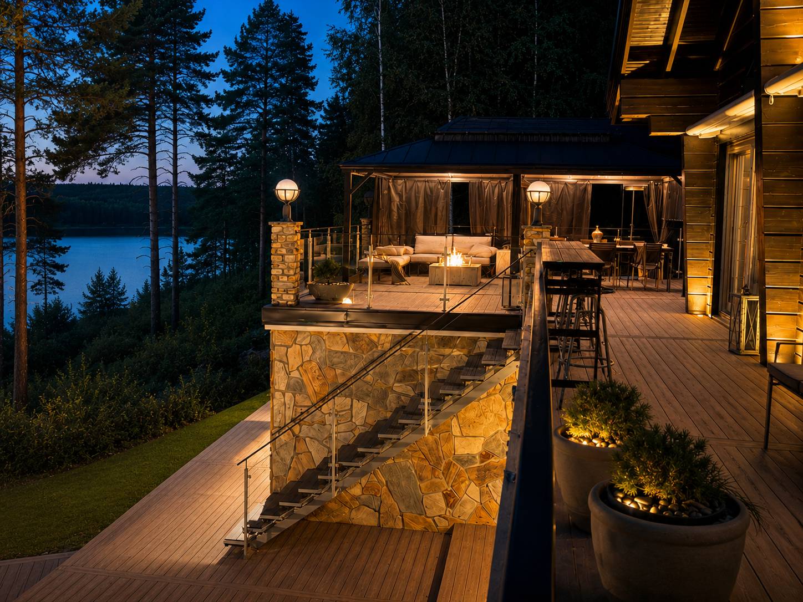
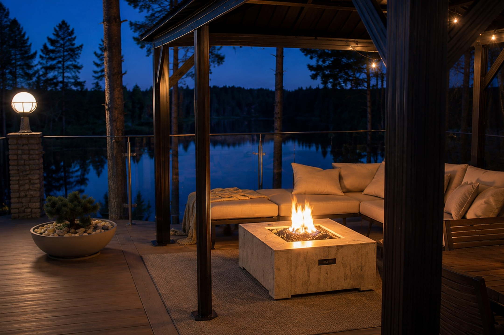
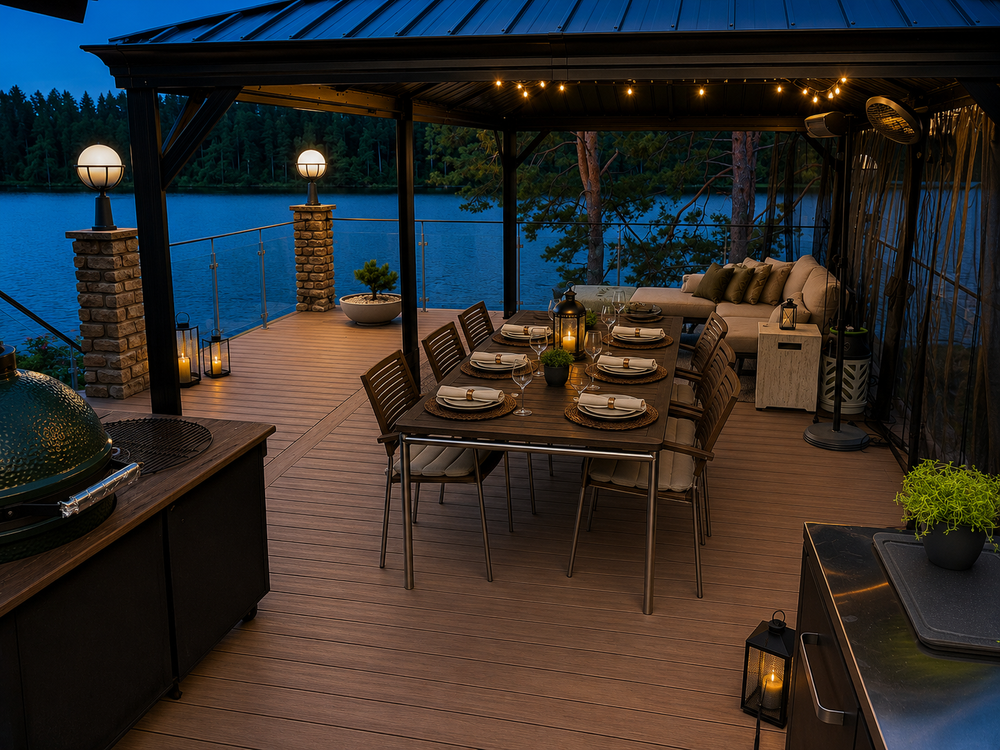
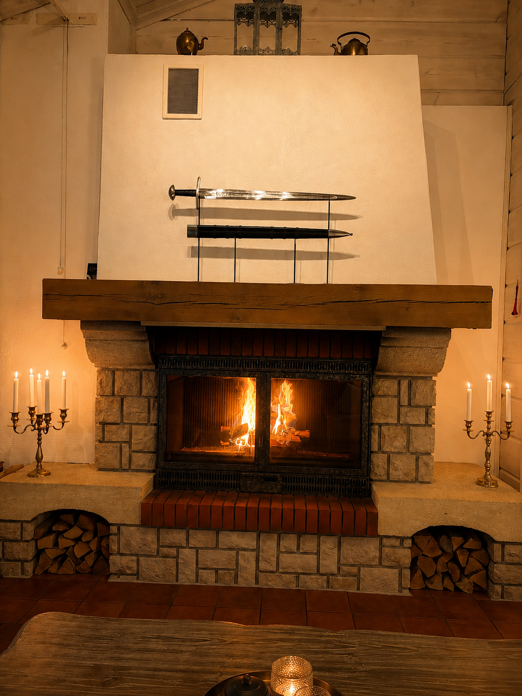
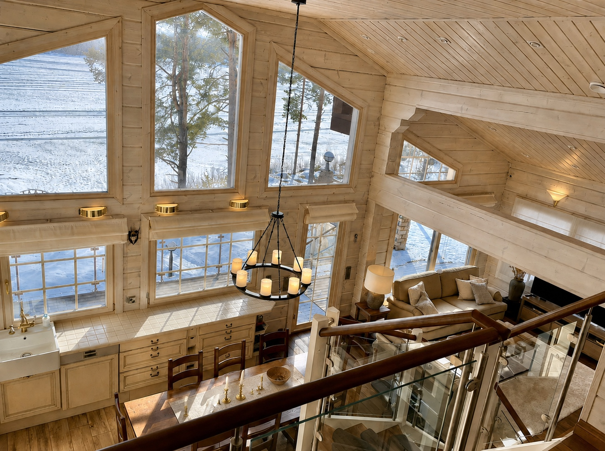
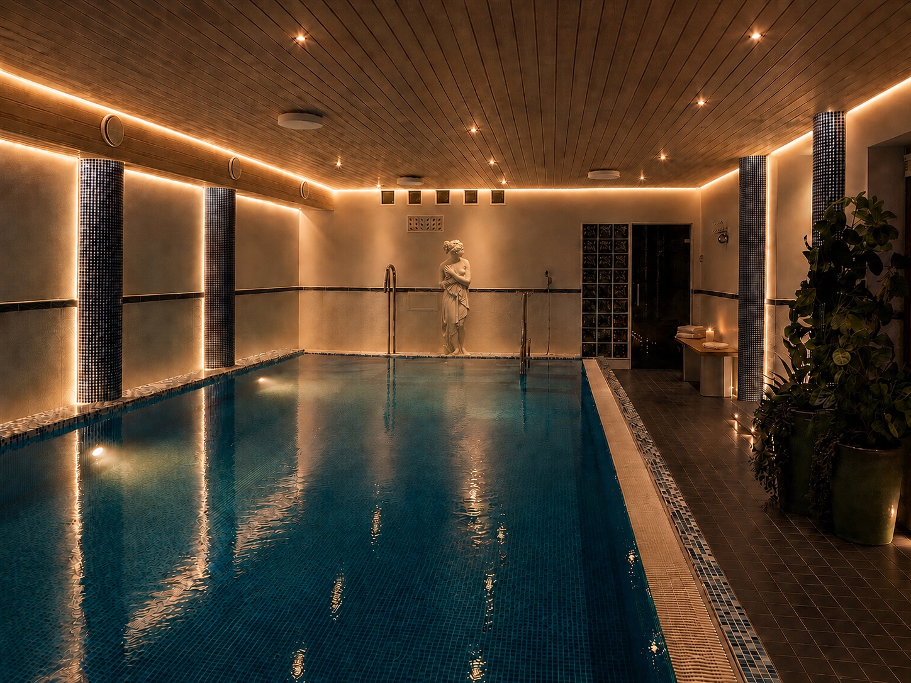
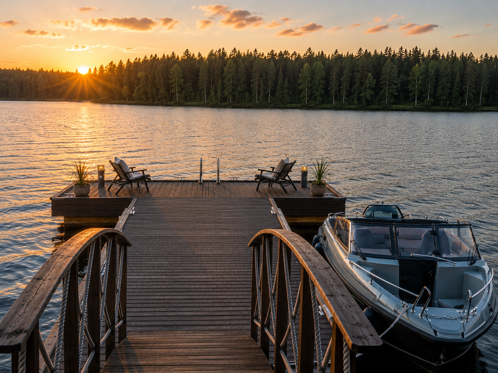
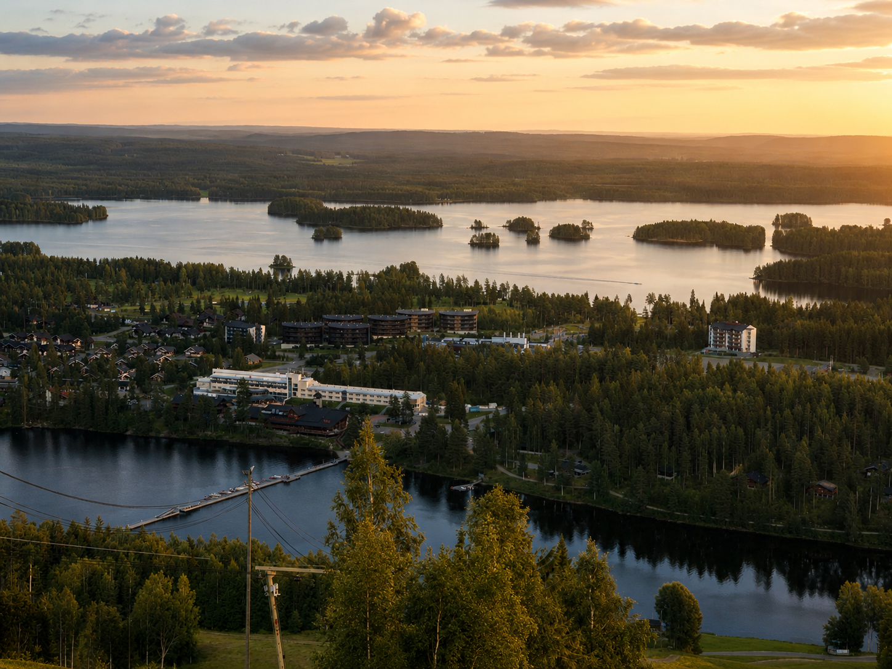
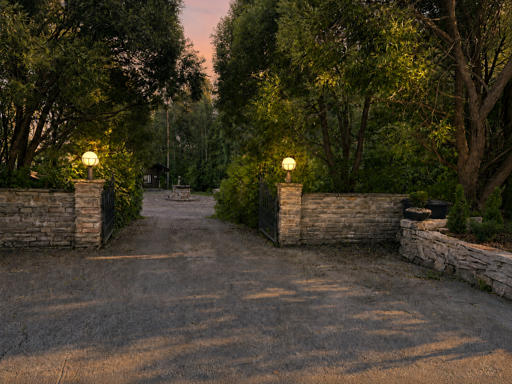

Det viktigaste
Ett privat läge vid sjön med skyddade uteplatser vända mot vattnet.

Livet vid sjön i flera nivåer
Terrasserna leder naturligt ner mot vattnet och skapar egna platser för måltider, avkoppling och stilla stunder vid sjön.

Ett kvällsrum vid sjön
Ett rum utan väggar – varmt ljus, eld och stilla kvällar vid vattnet.

Från terrassen till bordet
Långa middagar vid sjön, tillagade och avnjutna där terrassen möter landskapet.

Eld, sten & berättelser
Eld, sten och utvalda detaljer ger villan en karaktär som känns snarare än förklaras.

En egendom, öppen mot sjön
Sällskapsrum, matplatser och privata rum binds samman av ljus, vyer och den skiftande sjön utanför.
UPPTÄCK VILLAN >
Privat välbefinnande året runt
Pool, bastu och värme skapar en privat wellnessvärld inne i villan.
SPA & WELLNESS >
Sjön börjar vid din dörr
Den egna bryggan ger direkt tillgång till bad, båtliv och det finska sjölandskapets vattenvägar.
UPPTÄCK >
Privat, men nära Tahko
Ett privat läge vid sjön med närhet till Tahko, Kuopio och det större finska sjölandskapet.
LÄGE >
En ankomst utan friktion
Förberedelser, städning och lokal service gör varje ankomst enkel.
PRIVATA TJÄNSTER >